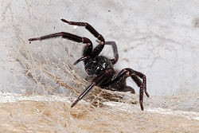

Spiders
Spiders tend to incite a considerable amount of fear in most people, and while it is true that Australia has some of the most venomous spiders in the world, they are often much maligned as bites are infrequent and they serve a valuable purpose.
Nevertheless spiders are a concern for many people and with a proper treatment plan we can eliminate them from our homes.
A list of the common spiders you may encounter in the southern states are below. Please refer to our treatment packages for details on the available treatments.
Redback Spider
Latrodectus hasselti
Redback spiders are found throughout Australia, in many habitats, including urban areas. They often hide in dry, sheltered places such as garden sheds, mailboxes and the time honoured location of under toilet seats.
Numbers of redback spider bites are uncertain, but about 2000 are reported each year and about 250 people receive antivenom. No deaths have been recorded since redback antivenom became available in the 1950s.
Most serious bites are from the female redback spider, which measures about 1cm long (bigger than males) and is recognisable by the well-known red stripe on its back, from which it gains its name.
Their venom affects the nervous system, which is potentially dangerous for humans, but their small fangs make many of the bites ineffective. Envenomation can cause various effects, but the main symptom is severe and persistent pain - which can last hours to days depending on the person's sensitivity to the venom - and may include nausea, malaise and lethargy.
Cupboard spiders (Steatoda sp.) are often mistaken for redbacks and they produce similar symptoms, though their venom is less potent. Redback venom is effective against these bites.
Mouse Spider
(Missulena sp.)
There are eight species of mouse spider found all across Australia and they're typically found in burrows, often near rivers or waterways, and can occasionally be found in suburban areas.
Their venom is similar to the funnel-web spiders, although no deaths have been attributed to them; only one case of severe envenomation has been recorded. Studies have shown the funnel-web spider antivenom to be effective for mouse spider envenomation; and because it is sometimes difficult to tell the two species apart, the bites should be treated with the same precaution.
Mouse spiders are rather lethargic and rarely aggressive. The females generally remain in their burrow, while the males wander looking for them, generally in late summer to early winter. Unlike other spiders, mouse spiders are often active during the daytime, while other species from the same family prefer to wonder at night to avoid the heat and the day-active predators.
Trap Door Spiders
(Idiopidae family)
These spiders are named after their habit of camouflaging the entrance of their burrow to trick their prey into falling inside. They measure about 1.5 to 3cm long and as is often the case, females are distinctively larger than males but males tend to be more aggressive when feeling threatened.
Found throughout Australia's natural or urban environments, trap door spiders cause only minor symptoms for humans, generally inflicting only localised pain, but sometimes nausea, lethargy and malaise.
Just like the mouse spiders, trap door spiders are often mistaken for funnel-web spiders, especially since the early effects of their bites are similar; these spiders should therefore be treated with caution. While most spiders live for about one year, trap door spiders can live between five and 20 years.
White-tailed spiders
(Lampona cylindrata and L. murina)
Lampona cylindrata is found in natural and urban areas across southern Australia, from south Queensland to Tasmania and from east to west coast, and Lampona murina in eastern Australia. Unlike burrowing spiders, white-tailed spiders are vagrant hunters and wander about at night, hunting other spiders.
Though white-tailed spiders have a reputation for releasing necrotising (flesh-eating) venom, the scientific evidence doesn't support this assertion. More likely, the spiders were wrongly held to blame for difficult to diagnose skin ulcers. Recent studies have shown the venom causes no major danger to humans and is limited to mild local pain.
Australian Tarantulas
Australia has its own native tarantulas, though they're also known as whistling or barking spiders because of the sounds some species can produce by rubbing their front limbs against their jaws. They are also called bird-eating spiders, although it is rarely justifiable. These spiders mostly feed on insects, including other spiders, lizards and frogs and would occasionally prey on bird hatchlings.
Four genera, Selenocosmia, Selenotholus, Selenotypus, and Phlogiellus are generally found throughout the country. Only six species have been officially identified, though it's likely many more exists. Despite their intimidating large size and hairy legs, (6cm body and up to 16cm legspan) tarantulas aren't fatal to humans; they can render painful bites because of their large fangs (1cm long), but severe effects (nausea, vomiting, fever) are rare. They can, however, kill dogs. Females live for about 12 years and males about five.
Recluse Spider
(Loxosceles reclusa)
Also known as a fiddleback spider, the recluse spider has potentially dangerous venom that can be haemotoxic, damaging the blood and skin as well. Alarming emails have circulated about this spider inflicting terrible damage to human tissue but this was only a hoax meant to scare people.
In 20 years that fiddleback spiders been known to exist in Australia, their range hasn't increased and not a single envenomation case has been reported here, so despite the myth, this spider can hardly be considered dangerous in Australia - though they are a major cause of serious bites in South America. Moreover, they are known to only have tiny fangs to inject their venom and are not inclined to bite.
Hunstman Spiders
(Sparassidae family)
Huntsman spiders are widespread in Australia. They are famous for being the bit (up to 15cm leg-span) scary, hairy, black spiders bolting out from behind the curtains. In reality, they are reluctant to bite and more likely to run away when approached and their venom isn't considered dangerous for humans.
Their danger comes more from causing accidents by the terrified drivers who react to a huntsman jumping out from behind the sun visor or dashboard of a car when it's in motion. Despite their intimidating size, huntsman spiders can be an ally in the house; they help with pest-control by eating smaller insects.
Common garden orb weaver spider
(Eriophora sp)
As the name suggests, common garden orb weave spiders are a typical sight around Australia. Their bites have only minor effects, such as some local pain, but they are aggressive: they're the most common spider species to bite.
They measure between 1.5cm and 3cm and live in all the gardens, generally weaving webs between trees, on hedges or washing lines, in places where other insects are likely to fly and get caught in the sticky threads. Active at night, they hide during the day and rest with their legs withdrawn under the body, hanging off a thread under a leaf or in the clothes hanging from the line.
Black house spider
(Badumna insignis)
The black house spider is a common species of cribellate Australian spider, found throughout much of Australia and New Zealand. A closely related species, variously called the brown house spider or the grey house spider (Badumna longinquus), has a similar distribution. It is also known as the common black spider.
B. insignis is a dark, robust spider, the female growing up to 18mm, with a 30mm legspan. As with most spiders, the males are smaller (10mm), and have longer legs in relation to their body size.
Black and grey house spiders are widely distributed throughout Australia and New Zealand. In natural habitat, they are usually found on rough-barked trees, whereas inside buildings they are often found in corners, around windows and doorways, or where other light sources may attract prey insects. B. longinquus may be found in similar locations, but is more often found outdoors.
The webs of both B. insignis and B. longinquus are a messy-looking construct of irregular sail-like shapes. There is a funnel-shaped, silken retreat, usually in the middle or corner of the web, where the spider spends most of its time waiting for prey. The female spider never leaves the web unless forced to. They seem quite attached to their location, rarely changing the position of their webs and because of this, old webs can be quite messy, often with small objects or dust stuck in them. At night the spider comes out to repair and add to the web, often just adding new silk over the old.
Predators include the White-tailed spider, as well as parasitic wasps and flies. The bite of the Black House Spider is poisonous but not lethal. Certain people bitten experience severe pain around the bite site, heavy sweating, muscular pains, vomiting, headaches and giddiness
Contact US
- (817) 498-5816
- integratermite.pest@gmail.com
-

-

-

-